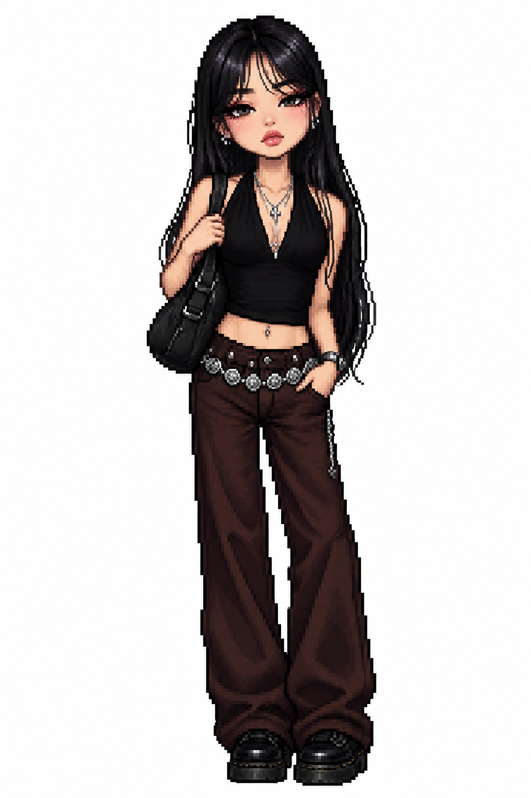

Portafolio
Jiamin Huang Wu

Diseñadora con mención Industrial
Idiomas:
Idiomas:
- español
- chino mandarín
- chino cantonés
Réplica Mimus Tenca


Autómata mecánico de madera


Iluminaria


Arv chair